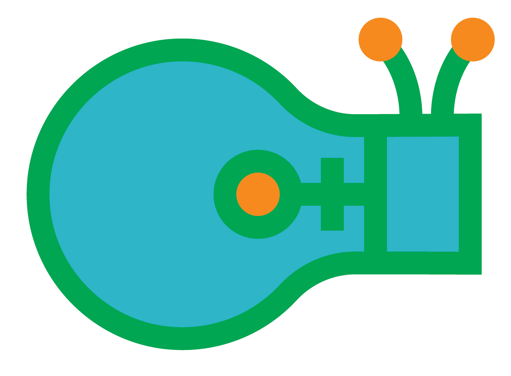

FAQ
Why do I need a consent form?
We value all attendees’ privacy—and we’ll be documenting the event. The consent form let’s you opt in or out of having your picture or video taken. It’s is required for everyone under the age of 18 and must be signed by a parent/guardian. For entry, please bring it signed to the event.
How do I get the consent form?
Download one here, or grab a copy at the event (just make sure your parent/guardian is there to sign it). To make the entry line go faster, we recommend you bringing it ready to go!
What if I’m a student that’s 18 or older?
You don’t need a consent form. Just bring your ID.
I’m a parent, guardian, or teacher—what do I need to do?
Once you get to MINDBODY, please sign in at the front desk. We need you to fill out a standard paper release (NDA). This allows us to take you on a tour and let’s you go down our famous slide! If you aren’t sure where to go, find a Women in Tech volunteer and they’d be happy to help.
Where is the event?
This event is at the main building at MINDBODY—in our largest conference room called “MGM”. We’ll have signs and volunteers around the campus to guide you to the right spot.
Where can I park?
Park anywhere in the MINDBODY lot or garage.
Will there be snacks or drinks?
Yes! We’ll provide snacks and drinks for free (including cookies, chips, and soft drinks). For dinner, we highly recommend visiting Farmers’ Market in downtown San Luis Obispo, just a couple miles away from MINDBODY.